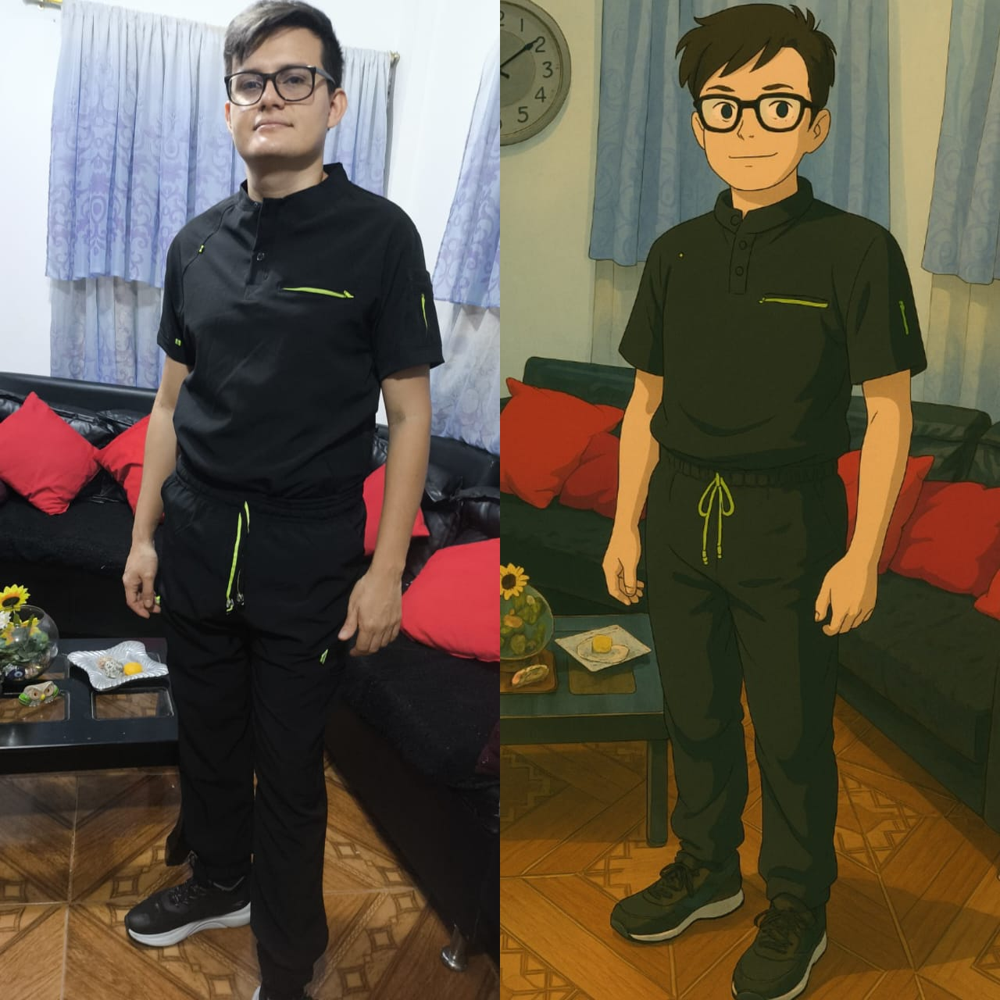
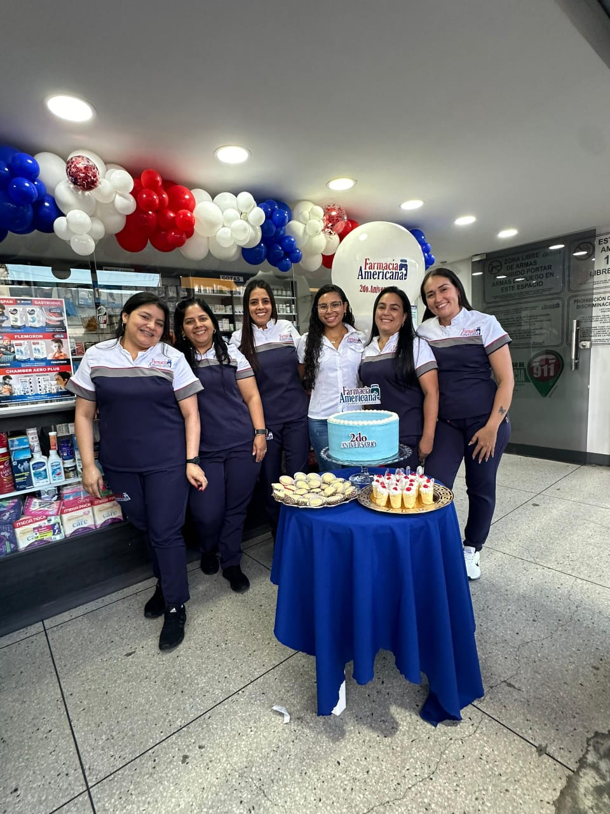
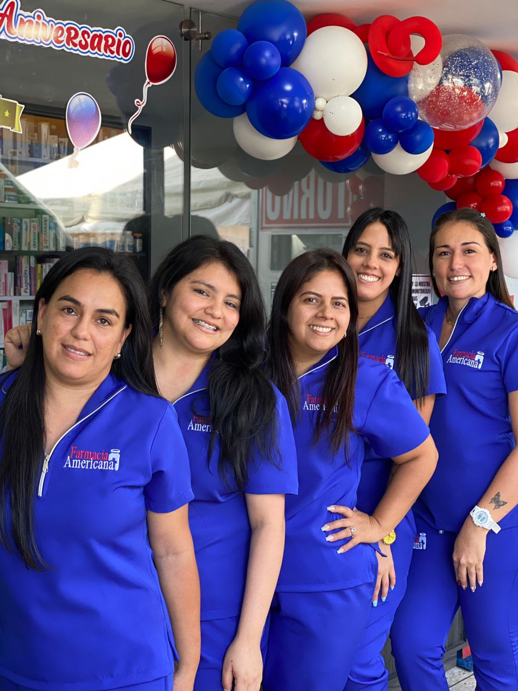

Me dedico a la confección y reparación de prendas de vestir, así como a la creación de artículos personalizados como uniformes estudiantil o de trabajo, camisas personalizadas y batas. Mi objetivo es brindar un servicio de alta calidad que satisfaga las necesidades y gustos de mis clientes.
Descubre cómo Creaciones Isamar puede transformar tu vestuario profesional con estilo y funcionalidad.
Cada puntada en Creaciones Isamar representa nuestro compromiso con la excelencia. Descubre cómo nuestros uniformes, batas y prendas confeccionadas con dedicación, te ayudan a proyectar confianza y profesionalismo en cada labor. ¡Viste tu pasión, viste Isamar!"

Sabemos que los estudiantes necesitan uniformes que aguanten el ritmo del día a dia, el estudio y el movimiento constante.

Proyecta la seriedad y profesionalismo que tu empresa merece.

El sector salud requiere prendas que vayan más allá de la apariencia, ofreciendo una barrera de seguridad efectiva.
Te presentamos la gran variedad de preguntas que nos ha dejado nuestro clientes a lo largo de nuestro trayecto
El tiempo de confección varía según la complejidad del diseño y la cantidad solicitada. Generalmente, los pedidos estándar se completan en 7 a 14 días hábiles.
Sí, ofrecemos servicios de personalización que incluyen bordados y estampados de alta calidad para logos, nombres y diseños específicos.
Sí, podemos proporcionar muestras de telas y diseños para que puedas evaluar la calidad antes de realizar un pedido grande.
Utilizamos una variedad de telas, incluyendo algodón, poliéster y mezclas especiales diseñadas para durabilidad y comodidad, adaptándonos a las necesidades específicas de cada cliente.
Si tienes cualquier tipo de pregunta, que no haya estado me la puedes hacer llegar llenando este formulario